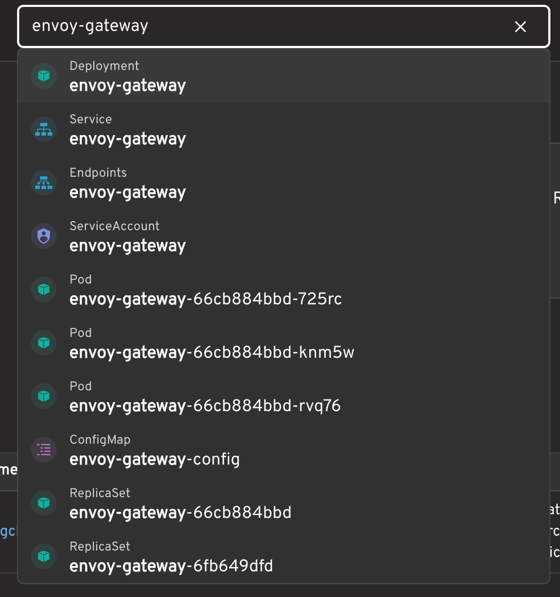

最近在用 Headlamp 管理 Kubernetes 集群时，注意到页面顶部有一个全局搜索框。
输入 Pod 名称、namespace，甚至是资源类型，都能很快跳到目标资源。第一眼看上去，它很像是接入了某种集群搜索服务：把搜索词发给 Kubernetes API，然后由后端返回模糊匹配的结果。
出于好奇翻了一下实现，发现它的思路其实很直接：先把资源列表拉到前端，再在浏览器里做模糊搜索。

Kubernetes API 并不提供通用模糊查询
Kubernetes API 可以通过 label selector、field selector 等条件筛选资源。例如，可以按标签找一批 Pod。
但它并不支持下面这类通用查询：
1 | 查找名称大概包含 nginx 的所有资源 |
所以 Headlamp 不会把用户输入直接交给 Kubernetes API 做模糊匹配。
打开搜索后，先收集候选资源
当点击顶部搜索框，或者按下默认快捷键 / 时，Headlamp 会开始准备搜索数据。它会读取当前集群里的多类 Kubernetes 资源，包括：
- Pod
- Deployment
- Service
- Job 和 CronJob
- ConfigMap
- Namespace
- StatefulSet、ReplicaSet
- PVC、Ingress、Node、ServiceAccount 等
对于 Pod 这类 namespace 级资源，如果当前集群允许访问多个 namespace，Headlamp 会针对每个 namespace 分别发起 List 请求，再把结果合并到前端的同一个资源列表中。
例如，允许访问的范围是：
1 | default |
那么 Pod 数据大致就来自三个 namespace 的列表请求。若没有限制 namespace，则会使用集群范围的列表请求；最终能看到哪些资源，依然由 Kubernetes RBAC 决定。
真正的搜索发生在浏览器里
资源列表到达前端后，Headlamp 会把每个对象整理为可搜索项。除了资源名称外，其中还会带上资源类型、namespace、labels 和用于展示的辅助信息。
然后，它使用 Fuse.js 做本地模糊匹配。
因此，输入：
1 | coredns kube-system |
并不是向 API Server 发送一个包含模糊条件的请求，而是在已加载的候选项中匹配。多个词的行为更接近 AND：结果需要同时匹配 coredns 和 kube-system，但两个词可以命中不同字段，例如一个命中资源名，另一个命中 namespace。
如果输入类似：
1 | app=coredns |
标签也会成为匹配线索。
为了控制误命中和结果数量，Headlamp 对 Fuse.js 使用了较严格的匹配阈值，并限制了最多展示的结果数。搜索结果中的命中片段也可以被高亮出来。
它不只是 Kubernetes 资源搜索
Headlamp 顶部搜索框中混入的并不只有 Kubernetes 对象。它还会放入一些可以直接跳转或执行的项目，例如：
- 集群切换
- 页面入口
- namespace 设置
- 主题切换
- 快捷键设置
- 跳转到高级搜索的建议
因此，它更像是“资源导航 + 命令面板”的组合，而不仅仅是一个 Pod 搜索框。

为什么结果看起来很实时？
初次获取资源列表后，Headlamp 还会借助 Kubernetes 的 Watch 机制持续接收资源变化。Pod 创建、更新或删除时，前端维护的资源集合也会随之刷新。
整个过程可以概括为：
1 | Kubernetes List 获取初始状态 |
这种实现适合什么场景？
这套方案的优点很明显：不需要额外部署搜索服务，搜索响应很快，也能把资源、页面和操作收进一个入口。
不过它并不是真正的集群级搜索引擎。资源量或集群数量很大时，压力主要不在 Fuse.js，而在于前端需要先拉取并持续维护大量资源清单。
所以 Headlamp 的顶部搜索更适合导航型需求：我大概知道自己要找什么资源，希望尽快跳过去。对于跨集群检索大量 YAML 内容、复杂全文查询、历史状态检索，或者几十万对象下的稳定低延迟搜索，则更适合使用独立的索引服务。
一点思考
Headlamp 的全局搜索没有依赖 Kubernetes API 的模糊查询能力，而是把 Kubernetes 的 List 和 Watch 能力与前端的 Fuse.js 搜索结合起来。一个看起来像“全局搜索”的功能，背后其实是资源缓存与前端交互的组合。
这让我想到，在云原生时代，很多基础设施都会尽量直接建立在 Kubernetes 原生能力之上：通过 List 获取初始状态，用 Watch 持续同步变化，再在自己的缓存或界面层完成所需的交互。这样做不一定能覆盖所有场景，却能少引入一套额外的组件、存储和运维成本，也天然沿用 Kubernetes 的 RBAC 与资源模型。
当然，真正的大规模全文检索仍然需要专门的索引服务；但当需求只是围绕当前可见资源做导航、筛选、聚合或简单的状态判断时，Headlamp 的思路很值得借鉴。实现功能时，不妨先问一句：能不能先用 Kubernetes 已有的 List、Watch、label 和资源状态把问题解决，再在本地维护一个足够小、足够新鲜的视图？
很多时候，答案是可以的。它不试图把自己做成搜索引擎，而是把当前可见的集群资源整理成一个足够顺手的导航入口；这种克制，反而让功能更贴合云原生系统本身的运行方式。